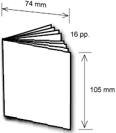
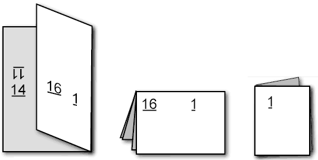

CAPTION 2002
CAPTION :: 2002 :: Making Minicomics ::
This recipe makes a minicomic in A7 format (74 mm×105 mm before trimming) with sixteen pages (including the front and back covers).

Because it does the folding and stapling before trimming, you get a neater edge. The downside is that preparing the artwork is a little fiddlier. You may prefer a simpler method.
Break down your story in to 16 pages. Remember that page 1 is the front cover, and you will probably want to reserve page 16 the back cover. That leaves 14 pages for story.
Start with two A4 pieces of paper. These correspond to the two sides of the printed page. Fold each once lengthways and twice widthways to divide them in to eight panels (or mark out the divisions in pencil). Draw the pages of your story in the following order:
| Side A | Side B |
|---|---|
The grey reversed figures show the corresponding page on the other side. Where the numbers are upside down, the picture has to be upside down too (turn the paper over). In all cases the top of the panel points to the middle of the paper.
One double-sided A4 copy makes one minicomic. Nowadays copy shops have machines that can be shown both sides of the page and then print double-sided copies automatically and so we let them handle everything. In the olden days we did this by making copies of one side, then using the copies to fill the paper drawer in order to print the other side (or using the manual-feed tray, depending on the machine). Generally we had to make a few trial copies to get the second side the right way up...
Now fold each piece of paper three times in this order:

To help remember the order, notice that the first fold brings pages 2 and 3 together, and the second brings 12 and 13 together.
After making the third fold, staple the packet through the spine.
Now all that is left is some work with a guillotine or scalpel to slice off a millimetre or two from the outside edges of the packet (not the spine!), thus separating the pages and making a finished minicomic.